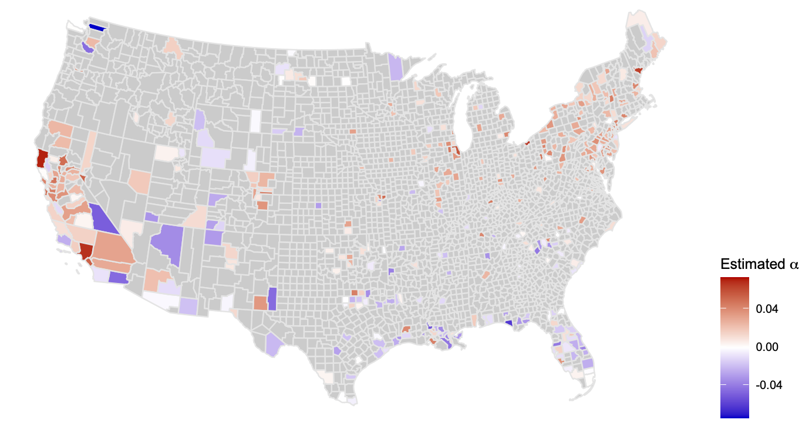
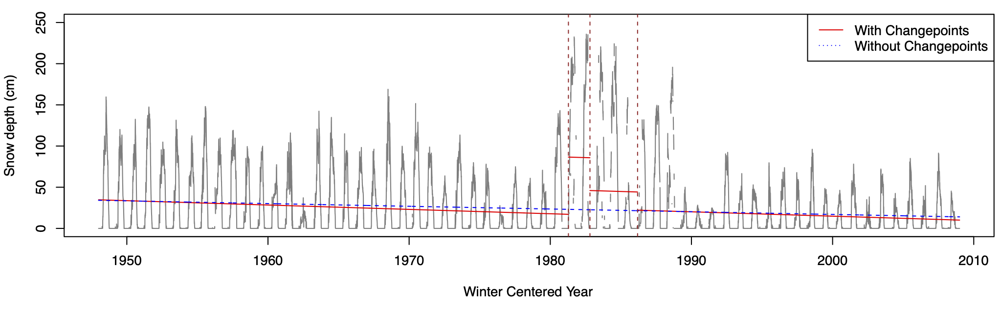

Arizona Data Science Corps (AZDSC)
- NAU researchers receive grant to further data science education across Arizona. Arizona Daily Sun, Oct. 2025

- How NAU researchers are preparing Arizona kids for data-centered careers. The NAU Review, Sep. 2025
Trend assessment with changepoint considerations
- Trends in US county-level weekly maximum ozone concentrations (Lee & Lee, JRSSA 2025 )

- Trend of daily snow depths in Warm Lake, Idaho (Lee, Lund, Woody, & Xu, Environmet. 2020 )

- Trends of US monthly maximum temperatures (Lee, Li, & Lund, J. Climate 2014 )

- Trends of US monthly minimum temperatures (Lee, Li, & Lund, J. Climate 2014 )